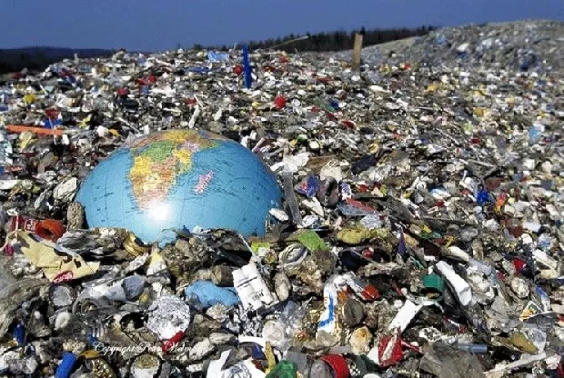
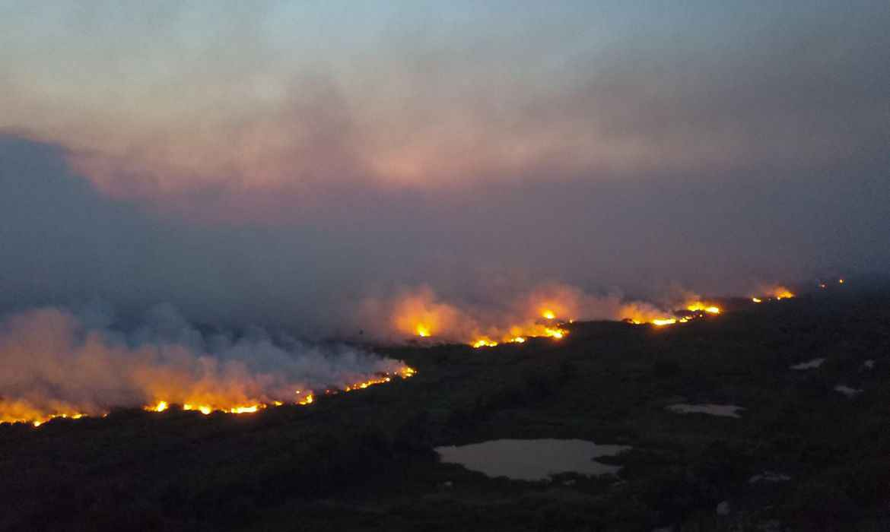
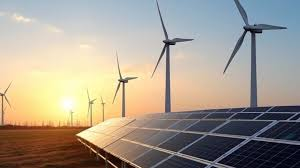
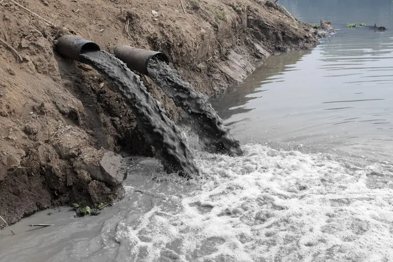
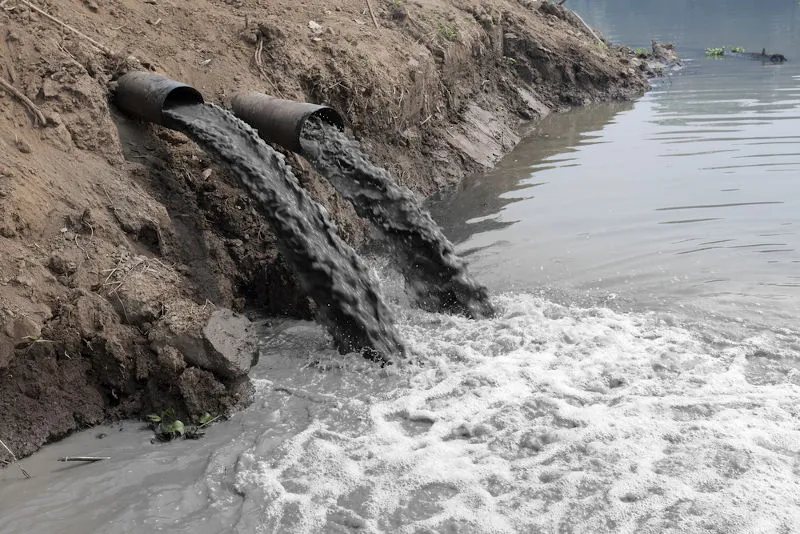
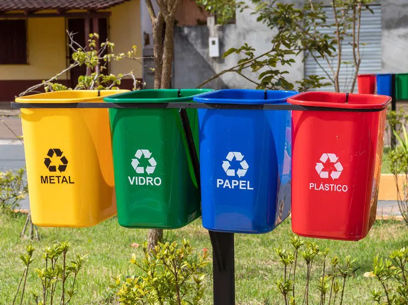
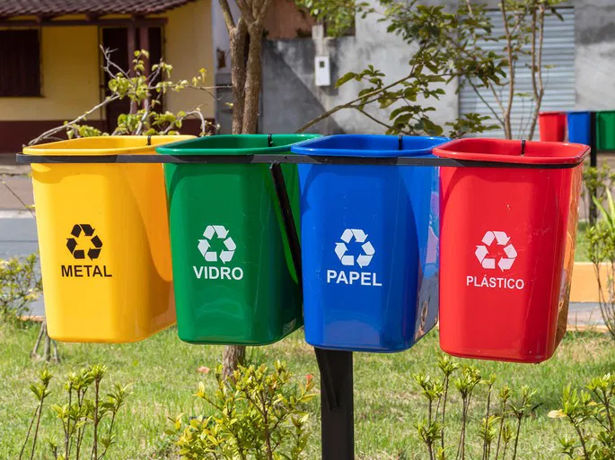

.jpg)
Mudanças Climáticas e Geração de Lixo
Nos últimos anos, as condições climáticas têm se intensificado em todo o mundo. Fenômenos como ondas de calor, secas prolongadas, enchentes e tempestades mais violentas são cada vez mais frequentes. Ao mesmo tempo, o aumento no consumo e a produção excessiva de resíduos estão gerando uma quantidade alarmante de lixo, grande parte não reciclável. Esse cenário traz sérias consequências para os ecossistemas e para a qualidade de vida humana.
Impactos das Mudanças Climáticas
- Aumento da temperatura média global 🌡️
- Derretimento das calotas polares e elevação do nível do mar 🌊
- Secas e desertificação em várias regiões 🌵
- Tempestades, furacões e enchentes mais intensos ⛈️
- Extinção de espécies e perda de biodiversidade 🐾
Formas de Ser Sustentável
- Reduzir, reutilizar e reciclar materiais no dia a dia.
- Evitar o uso de plásticos descartáveis e optar por produtos duráveis.
- Economizar energia elétrica e água em casa e no trabalho.
- Adotar meios de transporte menos poluentes, como bicicletas ou transporte coletivo.
- Valorizar empresas e produtos comprometidos com práticas ambientais.
O que é Sustentabilidade?
- Ambiental: preservação da natureza e dos recursos naturais.
- Social: qualidade de vida, saúde e bem-estar para todos.
- Econômico: crescimento equilibrado sem exploração excessiva.
Fontes de Energia Renováveis
- Energia Solar: utiliza a luz do sol para gerar eletricidade de forma limpa.
- Energia Eólica: aproveita a força dos ventos por meio de turbinas.
- Energia Hidrelétrica: produz eletricidade a partir da força da água em movimento.
- Biomassa: converte resíduos orgânicos em energia.
- Geotérmica: utiliza o calor proveniente do interior da Terra.
Dicas Sustentáveis para o Dia a Dia
- Leve sua própria garrafa de água reutilizável 💧
- Prefira lâmpadas de LED, que gastam menos energia 💡
- Descarte pilhas e baterias em pontos de coleta adequados 🔋
- Troque o carro por bicicleta ou transporte coletivo 🚲
- Compre de produtores locais e reduza a emissão de carbono 🛒
Curiosidades Ambientais
- Uma árvore adulta pode absorver até 150 kg de CO₂ por ano 🌳
- O Brasil possui a maior biodiversidade do planeta 🐒
- Cerca de 8 milhões de toneladas de plástico chegam aos oceanos todos os anos 🐠
- A energia solar é hoje a fonte de energia que mais cresce no mundo ☀️



.jfif) 

.jfif) 

Linha do Tempo Ambiental
Clique em um ano para ver o evento.
Jogo da Reciclagem ♻️
Arraste o item até a lixeira correta:
🍾
📰
🥤
🍌
🟩 Vidro
🟦 Papel
🟥 Plástico
🟫 Orgânico
Simule Sua Economia Sustentável
Arraste o controle e veja o impacto da economia de água:
10 L/dia